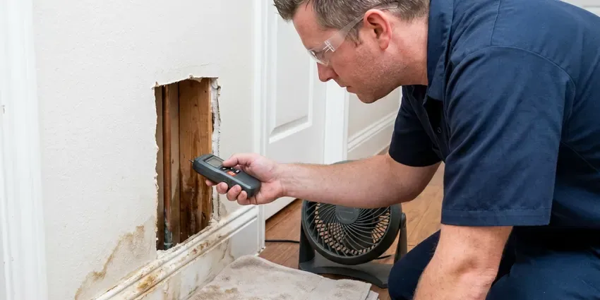

Basement Leak Repair in Grand Forks, ND
Facing a damp or flooded basement in Grand Forks, ND? HPN Plumbing offers proven solutions for all types of basement leaks.
- Lasting Repairs
- Licensed & Insured
- Expert Foundation Care
- Fast Leak Detection

Dry Out Your Basement for Good With Our Leak Pros in Grand Forks, ND.
Our team is ready to provide reliable basement leak solutions to keep your Grand Forks home dry and secure.
Trusted Basement Leak Repair for Homes With Lower Levels in Grand Forks, ND
We understand the challenges of basement waterproofing in North Dakota and use targeted methods to address everything from hairline cracks to major water breaches, protecting your property from structural damage and mold growth.
Our expertise includes:
- Hydrostatic pressure relief solutions
- Sump Pump Installation and Repair
- Sump pump, floor drain and backwater valve installation and service

Additional Plumbing Maintenance Services in Grand Forks, ND
Our maintenance and specialty plumbing services in Grand Forks, ND protect your home year-round and extend the life of every system.


Customers
Why Choose HPN Plumbing for Basement Leak Repair in Grand Forks, ND?
Our crew handles the plumbing repair and the drainage fixes that keep water away from the foundation. You get one team that understands both sides of the problem.
- Accurate Diagnosis, We pinpoint the exact cause of your basement leak, whether it's a foundation crack, pipe leak, or drainage issue.
- Lasting Fixes, We address the cause, such as a failed fitting or poor drainage, so the leak stays fixed.
- Lasting Solutions, Our repairs are designed to withstand North Dakota weather, including heavy rains and changing soil moisture.
Citywide Coverage
We provide dependable, high-quality basement waterproofing services across the entire Grand Forks area, ensuring no homeowner is left with a wet basement.
Experienced Team
Each technician at HPN Plumbing is committed to delivering quality workmanship, using a deep understanding of North Dakota building practices and plumbing systems to provide effective, long-lasting solutions.
Safety-First Approach
Standing water in a basement can reach outlets, water heaters and furnace components, so we check for electrical hazards before we work. All repairs meet the plumbing code adopted by your city or county.
Trusted Certified Grand Forks Plumbing Services Professionals
At HPN Plumbing, we take pride in providing licensed, certified plumbing services throughout Grand Forks, ND. Backed by leading industry credentials, our experienced plumbers combine technical skill with genuine customer care. Whether it is repair, installation, or maintenance, we follow strict safety and quality standards to deliver lasting results you can trust.
Call Us Now PHCC Plumbing Contractor Recognition
PHCC Plumbing Contractor Recognition Better Business Bureau (BBB) Accreditation
Better Business Bureau (BBB) Accreditation Angi Certified Pro
Angi Certified Pro ISO 9001 Quality Management Certification
ISO 9001 Quality Management CertificationProven Basement Leak Repair Services in Grand Forks, ND
Wall Leak Solutions in Grand Forks, ND
Beyond foundation cracks, we address leaks coming from basement walls due to porous concrete or masonry. Our methods include applying waterproof coatings and sealants that create a robust barrier against moisture. We also inspect for exterior drainage issues that might contribute to wall saturation, offering complete solutions for your Grand Forks home.

Sump Pump Installation & Repair in Grand Forks
A dependable sump pump is crucial for preventing basement flooding, particularly in areas with high water tables or heavy rainfall. We offer professional installation of high-capacity sump pumps, including battery backup systems, to ensure continuous protection. Our technicians also provide fast repair and maintenance services for existing sump pumps, ensuring they operate effectively when you need them most.
Exterior Waterproofing in Grand Forks, ND
For a more comprehensive solution, we offer exterior waterproofing, which involves excavating around your foundation, applying a waterproof membrane, and installing drainage boards. This method creates an watertight barrier on the outside of your basement walls, providing strong protection against water intrusion. Strong winds and extreme cold can drive frost into walls and crawlspaces, reaching pipes that seem well protected.
Water Heater and Appliance Leak Repair in Grand Forks, ND
Water heaters, softeners and laundry machines are often installed in basements, and their leaks pool fast. A dripping T&P valve, a corroded tank bottom or a split washer hose are common culprits. We repair or replace the failed part and install drain pans and leak sensors to catch future problems early. If a tank has rusted through, we can replace it the same day in most situations.
Interior Drainage Systems in Grand Forks
When exterior excavation isn't feasible, interior drainage systems provide an effective solution for managing basement leaks. We install perimeter drains along the basement walls, collecting water before it can surface and directing it to a sump pump for removal. This system is less disruptive and can be a cost-effective way to dry out a wet basement.
Drain and Sewer Pipe Leak Repair in Grand Forks, ND
Cast iron drain stacks in older homes crack and scale with age, and plastic joints can separate if a line was poorly supported. These leaks often show up only when an upstairs fixture runs. We run water through each drain while watching the basement, then verify the crack with a camera. Repairs range from a single section swap to replacing an entire stack with PVC or ABS.
Hydrostatic Pressure Management in Grand Forks, ND
Heavy rain can lead to significant hydrostatic pressure against basement walls, forcing water through concrete. Heavy summer thunderstorms can also overwhelm storm sewers, so backwater valves help protect finished basements. HPN Plumbing installs interior and exterior drainage systems, including French drains and weeping tile systems, to relieve this pressure. We also implement sump pump systems to efficiently remove collected water, keeping your basement dry.

Floor Drain and Backwater Valve Repair in Grand Forks
A basement floor drain that backs up during heavy use or a storm usually points to a blockage or a failed trap. We clear the drain, check the line to the main sewer and replace cracked traps and covers. Installing a backwater valve stops sewage from pushing back into the basement if the main line surcharges. We set the valve where it can be serviced easily.
Basement Leak Repair Near Me in Grand Forks, ND
A local plumber also understands how the soil and storms around Grand Forks affect lower levels. Frost heave can shift soil around sewer lines and misalign joints, which often shows up as slow drains or backups. We factor those conditions into every repair we recommend.
Choosing a local expert like HPN Plumbing means you get a team familiar with Grand Forks's plumbing and foundation needs. We're your neighbors, focused on providing quality basement leak repair solutions right here in your community.
HPN Plumbing at a Glance
- Fully licensed plumbing team covering Grand Forks, ND
- 24/7 emergency service with same-day scheduling
- Upfront, flat-rate pricing before work begins
- 4.9-star rated by 408+ North Dakota customers
Grand Forks Map
Grand Forks Information
- Population
- 58,921
- Area codes
- 701/218/402
- Service area
- Grand Forks and communities within 40 miles
- Nearby
- Fargo, West Fargo, Horace, Valley City
Basement leak repair is especially important for homes in Grand Forks, ND, where soil movement and storm water can exert significant pressure on foundations, leading to cracks and water intrusion. Heavy summer thunderstorms can also overload storm sewers, so backwater valves help protect finished basements.
Expert Services
Trust our professionals for reliable HPN Plumbing solutions in Grand Forks, ND.
Our Specialized Plumbing Services in Grand Forks, ND
At HPN Plumbing, we provide a complete range of plumbing services across Grand Forks, ND. From leak detection to full system installations, our team ensures fast, precise, and affordable service for both residential and commercial properties. Explore our core services below:


Here Is How Our Basement Leak Repair Process Works in Grand Forks, ND
We follow a clear process from initial contact to final inspection, keeping you informed every step of the way.
Request a Quote
Call (701) 403-1348 and describe where you see water and when it appears. We schedule a visit, often the same day, and explain our inspection fee up front.
Trace the Source
Our technician uses moisture meters, thermal imaging and pressure or dye tests to isolate the leak. We show you what we found and give you written repair options.
Repair and Verify
We make the repair, then retest the line or drain under real use. You get a summary of the work and tips to keep the basement dry.
Frequently Asked Questions About Basement Leak Repair in Grand Forks
Most basement plumbing leak repairs in Grand Forks cost $200 to $1,500, depending on the pipe and how hard it is to reach. Sump pump replacements run $600 to $1,800, and full interior drainage systems cost more. We give you a firm price before work starts.
Yes, our repairs carry a workmanship warranty, and new pumps and parts include the manufacturer warranty. We put the warranty terms in writing on your invoice. If the same repair fails, we come back.
For minor repairs like crack injections, permits are usually not required. However, for more extensive projects involving significant excavation, structural modifications, or new drainage system installations, permits from the Grand Forks building department may be necessary. HPN Plumbing will help you with any required permitting processes.
HPN Plumbing partners with trusted brands known for their durability and effectiveness in waterproofing and foundation repair. This includes products from industry leaders like Xypex, Sika, Tremco, and quality sump pump manufacturers like Zoeller and Wayne, ensuring reliable and long-lasting solutions for your Grand Forks home.
Common signs include damp spots on walls or floors, a musty odor, visible mold or mildew growth, efflorescence, which is a white powdery residue on concrete, peeling paint, or standing water after heavy rains. If you notice any of these in your Grand Forks home, it's time for an inspection.
We prioritize dependable, reliable brands known for their durability and performance in basement waterproofing. This includes trusted names for epoxy and polyurethane injection materials, as well as well-known sump pump brands like Zoeller, Little Giant, and Liberty Pumps. Our material selection is based on the specific needs of your Grand Forks property.
Yes, HPN Plumbing stands behind the quality of our work. We offer solid warranties on our basement leak repair services, with specific terms depending on the type of repair and materials used. We'll discuss the warranty details with you during your service agreement.
If your basement leak is due to a burst pipe, HPN Plumbing will first address the plumbing issue by repairing or replacing the damaged section. After the active leak is stopped, we can then assess any resulting water damage to your foundation or basement structure and recommend appropriate repairs to prevent future issues. Frost goes deep into the ground here, so water and sewer lines must be buried well below the surface to avoid freeze damage.
What People Are Saying About Our Plumbing Experts?

Emily R.
I called HPN Plumbing for plumbing repair, and the technician was fast, polite, and thorough. They explained the problem clearly and fixed it the same day. I will definitely hire them again. Highly recommended!
Plumbing Repair · Jamestown, ND
Laura S.
I scheduled a water heater replacement, and the team made the process smooth and affordable. The new unit works perfectly, and they cleaned up after completing the job.
Water Heater Replacement · Devils Lake, ND
Mark T.
When our office needed drain cleaning, HPN Plumbing provided quick, reliable service. The plumber arrived on time and made sure every drain flowed perfectly before leaving. Very satisfied.
Drain Cleaning · West Fargo, ND
Daniel K.
A pipe burst at 11 pm and they actually answered. The plumber showed up within the hour, shut everything down, and had us back to normal the next morning. Could not ask for more.
Emergency Plumbing · Horace, NDSofia M.
Two new toilets installed in one visit, no mess left behind, and the tech even adjusted a faucet he noticed was dripping. Fair pricing and really friendly.
Toilet Installation · West Fargo, ND
James P.
Our commercial plumbing system had a leak under the sink, and HPN Plumbing handled it professionally. The plumbers arrived quickly and restored everything without disruption to our customers.
Commercial Plumbing · Devils Lake, ND